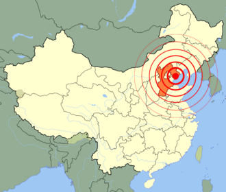

Welcome to my dataset. Here are the 9 deadliest earthquakes in recorded history, ranked by the number of people who died. Older death tolls are estimates, and some are still debated.

| Date | Location | Magnitude / Depth | Summary of Damage | Fatalities |
|---|---|---|---|---|
| Jul 27, 1976 | Tangshan, Hebei, China | 7.6 / about 12 to 17 km | 85 percent of the buildings in Tangshan collapsed or were rendered unusable. About 10 billion yuan in damage. | 242,000+ official (300,000+ estimated) |
| Dec 16, 1920 | Haiyuan, Ningxia and Gansu, China | 7.8 / not recorded | Destruction around Lijunbu, Haiyuan and Ganyanchi. Maximum Mercalli intensity of XII (Extreme). | 258,707 to 273,407 |
| May 21, 526 (approx.) | Antioch, Byzantine Empire (now Turkey) | 7.0 / not recorded | A fire after the earthquake destroyed most of the buildings left standing in Antioch. | 250,000 |
| Sep 30, 1139 | Ganja, Seljuk Empire (now Azerbaijan) | 7.0 to 7.3 / 16 to 23 km | One of the worst seismic events in history. It affected the Seljuk Empire and the Kingdom of Georgia. | 230,000 to 300,000 (disputed) |
| Dec 26, 2004 | Off Sumatra, Indonesia | 9.2 / 30 km | A tsunami with waves up to 30 m high hit coasts around the Indian Ocean and killed people in 14 countries. About US$15 billion in damage. | 227,898 |
| 1303 (Jul or Sep, sources differ) | Hongdong, Shanxi, China | 7.2 to 8.0 / not recorded | Maximum Mercalli intensity of XI (Extreme). One of the deadliest earthquakes in China. | About 200,000 |
| Dec 22, 856 | Damghan, Abbasid Caliphate (now Iran) | 7.9 / not recorded | Maximum Mercalli intensity of X (Extreme). The area of maximum damage stretched about 350 km along the Alborz mountains. | About 200,000 (debated) |
| Oct 11, 1138 | Aleppo, Seljuk Empire (now Syria) | 7.1 / not recorded | Damage and chaos in many places around Aleppo and northern Syria. | 130,000 to 230,000 (the higher figure likely mixes up several earthquakes) |
| Dec 28, 1908 | Messina, Italy | 7.1 / about 8 to 10 km | Messina and Reggio Calabria were nearly destroyed, with tsunami waves, fires and landslides. | About 120,000 |